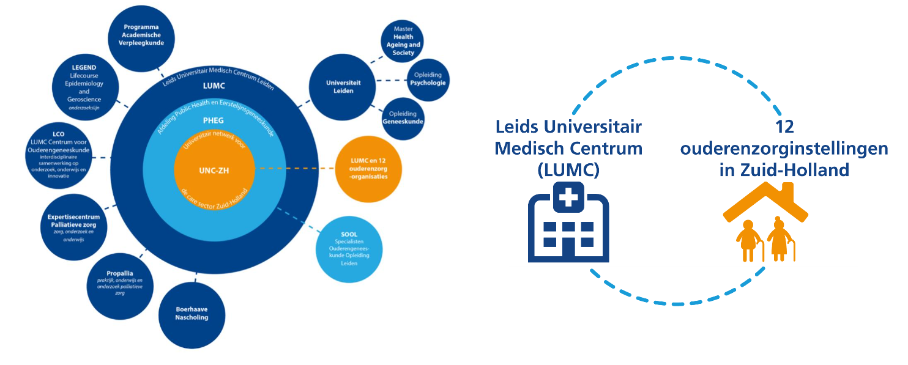
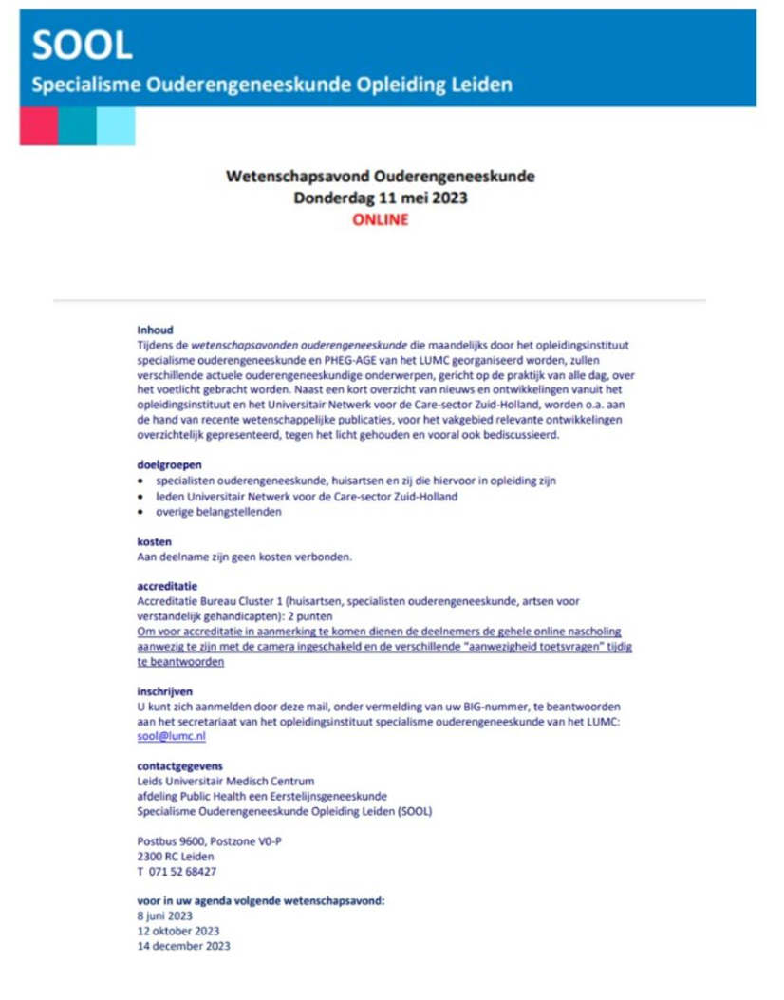
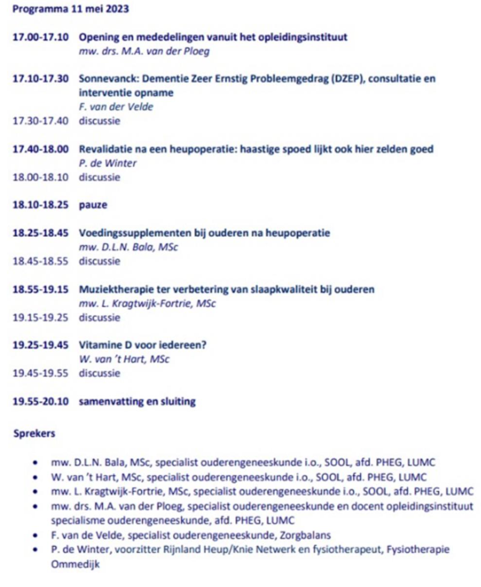
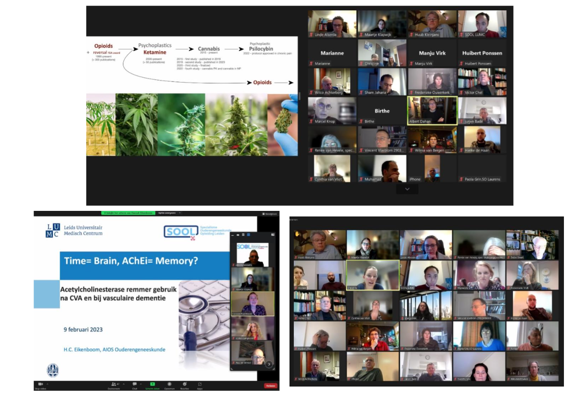

prof. dr. Jacobijn Gussekloo, huisarts; prof. dr. Wilco Achterberg, specialist
ouderengeneeskunde; prof. dr. Simon Mooijaart, internist-ouderengeneeskunde LUMC
Binnen het LUMC is er veel expertise aanwezig die nodig is voor het ontwikkelen van van passende medische zorg voor ouderen. Het LUMC Centrum voor Ouderengeneeskunde (LCO) is een hechte interdisciplinaire samenwerking van verschillende afdelingen in het LUMC. Hoogleraren Jacobijn Gussekloo, Simon Mooijaart en Wilco Achterberg zijn hiervan de ‘initiatiefnemers’.
In het LCO bundelen we deze expertise. Samen maken we ons sterk voor ‘lijnloze’, passende zorg voor ouderen, altijd en overal. Dat is onze missie. Het LCO verbindt verschillende disciplines, zoals specialisten ouderengeneeskunde, huisartsen, internisten-ouderengeneeskunde, biologen en velerlei onderzoekers. Deze brede LUMC-samenwerking biedt veel meer mogelijkheden voor onderzoek, opleiding, nascholing, onderwijs en zorginnovatie. Bij deze activiteiten worden steeds vaker ouderen betrokken. Door de krachten te bundelen komen we tot projecten die eerder niet mogelijk waren.
In 2023 zijn we gestart met de de FRIDAY-studie. Het doel van de FRIDAY-studie is om beter te begrijpen wat acute zorgproblemen van ouderen zijn, waarom ze optreden en hoe ze eerder opgemerkt zouden kunnen worden. We zijn hierbij begonnen met de analyse van acute zorgproblemen bij ouderen in de huisartspraktijk, meest karakteristiek voorkomend op de vrijdagmiddag. Vandaar de naam van de studie. In 2024 gaan we de vleugels uitslaan naar eenzelfde onderzoek bij spoedopnames in verpleeghuizen, in nauwe samenwerking met de zorgorganisaties binnen het Universitair Netwerk voor de Care Zuid-Holland. Een volgende stap wordt vast en zeker de eerstehulp van het ziekenhuis. Immers, spoedzorg voor ouderen vraagt om een analyse en oplossing over alle lijnen heen. De kennis die wordt opgedaan wordt omgezet in onderwijsprogramma’s, zoals in de studie geneeskunde en in de opleidi
ouderengeneeskunde. Zo liggen onderzoek en onderwijs over passende zorg bij ouderen in elkaars verlengde. Een van de grote voordelen van samenwerking in het LCO.
Ook voor het studentenonderwijs brengt de LCO-samenwerking nieuwe kansen. We werken LUMC-breed samen aan beter onderwijs over ouderengeneeskunde in de studie Geneeskunde van het LUMC. Onder het thema de ‘zilveren draad’ leren aankomende artsen in het LUMC van de eerste dag tot de laatste dag van hun studie alles wat nodig is om passende zorg te gaan geven aan ouderen: denk aan de biologie van veroudering, de voorkeuren en doelen van ouderen zelf, optimale communicatie met ouderen en de gevolgen van typische verouderingsziekten. Ouderen van het Ouderenberaad Zorg & Welzijn Zuid-Holland Noord dragen bij aan de ontwikkeling van het onderwijsprogramma, dit is heel stimulerend.’ We laten op deze manier de geneeskunde studenten zien dat goede medische zorg voor ouderen belangrijk is, en dat interdisciplinaire samenwerking cruciaal is voor passende ouderengeneeskunde. Maar bovenal willen we deze jonge studenten inspireren tot een toekomst in de ouderengeneeskunde. Iets wat hopelijk bijdraagt aan een voortgaande groei van de SOOL opleiding. Ook hier loont samenwerking!
Het universitair Netwerk voor de Care sector Zuid-Holland (UNC-ZH):
onderzoeksnetwerk in de ouderenzorg
Eveline Korving
Bij de opleiding tot Specialisme Ouderengeneeskunde in Leiden kun je je opleiding combineren met het doen van wetenschappelijk onderzoek. Hierin ligt een belangrijke samenwerking voor SOOL met het UNC-ZH. Veel van deze onderzoeken worden uitgevoerd in het UNC-ZH: artsen in opleiding tot onderzoeker (aioto’s) doen hun onderzoek in de zorgorganisaties uit het netwerk.
UNC-ZH in 2023: Kennis maken als kerntaak
Onze slogan is: Samen kennis maken, delen en toepassen. Dit heeft betrekking op onze drie kerntaken: het ontwikkelen van nieuwe kennis, deze kennis delen met wetenschap en praktijk en tools aanbieden om de kennis in de praktijk toe te passen.
De kennisontwikkeling – het onderzoek doen – is hierin onze basis. Wetenschappelijk onderzoek in samenwerking met de praktijk om de ouderenzorg te verbeteren. In 2023 stond deze basis weer als een huis: 30 onderzoeken, 3 promotietrajecten afgerond en nieuwe onderzoeken gestart. Om zo de zorg voor ouderen steeds meer ‘evidence based’ te maken: bewezen wat (beter) werkt en niet werkt.
Twee aioto’s van SOOL rondden onderzoek bij UNC-ZH af
Verschillende artsen in opleiding volgen dit aioto-traject en doen hun onderzoek in ons netwerk. Daarbij krijgen zij ook onderzoeksbegeleiding vanuit de staf van het netwerk. In 2023 rondden twee aioto’s hun onderzoek af:
Maaike Scheffers promoveerde 2 februari 2023 op haar onderzoek (FIT-HIP) naar het behandelen van valangst bij ouderen met een heupbreuk. Zij was specialist ouderengeneeskunde bij lidorganisatie ActiVite, later bij Topaz. Zij deed onderzoek tijdens de opleiding tot specialist ouderengeneeskunde in Leiden (SOOL). Naast haar proefschrift verschenen er een factsheet en infographic.
Bekijk hierhet onderzoek en de documenten.
Paulien van Dam promoveerde op 6 september 2023 op haar onderzoek (Q-PID) naar de vraag of paracetamol werkt als laagdrempelig middel om de kwaliteit van leven bij verpleeghuisbewoners met ernstige dementie te verbeteren. Zij is specialist ouderengeneeskunde bij lidorganisatie Topaz. Zij deed onderzoek tijdens de opleiding tot specialist ouderengeneeskunde in Leiden (SOOL) en in samenwerking met de Universiteit van Bergen (Noorwegen). Naast haar proefschrift verschenen er een animatie en een factsheet. Bekijk hier het onderzoek en de documenten.
Kennisontwikkeling in de ouderenzorg
Ook masterstudenten Health, Ageing and Society doen onderzoek in het UNC-ZH, bijvoorbeeld in de vorm van een wetenschapsstage. In 2023 bezochten studenten van deze master lidorganisaties van het UNC-ZH voor een blik in de verpleeghuispraktijk. De opleidingen en het netwerk bieden samen een mooi platform voor kennisontwikkeling in de ouderenzorg. Om nog meer uitwisseling met het onderwijs te bewerkstelligen zijn we een samenwerkingsverband aangegaan met Vitale Delta (4 hogescholen) en met Hogeschool Utrecht (op geriatrische revalidatie). Op fysiotherapie is sinds een aantal jaar een duurzame samenwerking tot stand gekomen voor studenten van de Hogeschool Leiden. Daarnaast zijn er constructieve contacten voor het mbo-onderwijs..
Een sterke samenwerking in de ouderenzorg
Het Universitair Netwerk voor de Care sector Zuid-Holland (UNC-ZH) bestaat sinds 2005. Dit netwerk is een samenwerkingsverband tussen de afdeling Public Health en Eerstelijnsgeneeskunde (PHEG) van het Leids Universitair Medisch Centrum (LUMC) en twaalf grote zorgorganisaties in Zuid-Holland. Alle deelnemers van het netwerk zetten zich in voor wetenschappelijk onderzoek om zo de ouderenzorg te kunnen verbeteren. Er zijn nog vijf academische netwerken in ouderenzorg [ https://academischeouderenzorg.nl/], hiermee is continue samenwerking en kennisuitwisseling op verschillende niveaus en thema’s.
Speerpunten van onderzoek
De speerpunten van onderzoek binnen ons netwerk zijn: geriatrische revalidatie, kwaliteit van leven bij dementie en palliatieve zorg bij dementie. Overkoepelend hebben we het thema cliëntparticipatie en interprofessioneel samenwerken. Door het gezamenlijk uitvoeren van wetenschappelijk onderzoek op deze speerpunten vindt structurele verbinding plaats tussen wetenschap en praktijk. De onderzoeken sluiten zoveel mogelijk aan bij de wensen en behoeften van verpleeghuisbewoners, door hen zelf en cliëntenraden actief te betrekken. Binnen onze speerpunten lopen verschillende onderzoeken. Alles is terug te vinden op onze, in 2023 vernieuwde, website.
De verbinding met AGE en LUMC
De thema’s van het UNC-ZH sluiten binnen het LUMC aan bij de Academische werkplaats voor Geriatrie in de Eerstelijn en langdurige Zorg (AGE). Deze werkplaats voor geriatrie is onderdeel van de afdeling Public Health en Eerstelijnsgeneeskunde (PHEG) van het LUMC. Het doel van het onderzoeksprogramma van AGE is het verbeteren van (de organisatie) van medische zorg aan ouderen, gebaseerd op wetenschappelijke kennis en evidentie. Het UNC-ZH draagt hieraan bij door de zorgpraktijk, het onderzoek en onderwijs en nascholing zo veel mogelijk te integreren.
Op de afdeling Public Health en Eerstelijnsgeneeskunde en binnen het LUMC zijn er sterke verbindingen in onder andere onderzoek en onderwijs over de zorg voor ouderen. Hierin werken we samen met SOOL en de master Health, Ageing and Society en specialisaties in het LUMC. Deze verbindingen zijn verstevigd in het LUMC Centrum voor Ouderengeneeskunde (LCO).
Motor tot verbinding
Het LUMC heeft in de ouderenzorg o.a. als missie om zorg, onderzoek en onderwijs/opleiding en nascholing te verbinden. De afdeling PHEG heeft het voordeel dat voor de huisarts- en specialist ouderengeneeskunde onderzoek, opleiding, nascholing en onderwijs heel dicht bij elkaar is georganiseerd. Daarnaast zijn zowel de landelijke NHG-kaderopleiding ouderenzorg voor huisartsen en de landelijke kaderopleiding specialist ouderengeneeskunde in de eerste lijn beide aan de afdeling PHEG verbonden. Deze kaderopleidingen hebben een uitstekende samenwerking, zo zijn er bijvoorbeeld regelmatig gezamenlijke terugkomdagen.

Wetenschapsavonden ouderengeneeskunde
dr. Maartje Klapwijk, specialist ouderengeneeskunde
Er is het hele jaar de eerste donderdag van de maand door het opleidingsinstituut specialisme ouderengeneeskunde en PHEG-AGE van het LUMC een nascholing georganiseerd. Het afgelopen jaar was bewust gekozen voor het grotendeels online continueren van de wetenschapsavonden, mede door de hoge opkomst bij de digitale versies. Juist omdat er tijdens deze nascholingsavonden, die al sinds 2014 plaatsvinden, veel ruimte is voor interactie tussen specialisten ouderengeneeskunde en huisartsen (en zij die daarvoor in opleiding zijn) en leden van het Universitair Netwerk voor de Care sector Zuid-Holland (UNC-ZH) is dit voort gezet via de digitale versie via Zoom. Deze avond kan altijd alleen gevolgd worden na aanmelding via het secretariaat van het Specialisme Ouderengeneeskunde Opleiding Leiden (SOOL). (sool@lumc.nl)

Opening; Opleiding en UNC-ZH
De eerste donderdag is ook de ‘terugkomdag’ van perifere opleiders, zodat meteen hierna om 17.00 uur gestart kan worden met mededelingen vanuit het opleidingsinstituut en vanuit het UNC-ZH.
Voordrachten Voor de digitale versie is gekozen voor twee plenaire voordrachten van elk twintig minuten met tien minuten om met elkaar in discussie te gaan en kennis te delen en over verschillende actuele ouderengeneeskundige onderwerpen. Hierna was er een pauze van 15 minuten. Daarna waren er 3 plenaire voordrachten. Van de vijf plenaire voordrachten, worden er in principe drie verzorgd door aios ouderengeneeskunde en twee door medisch specialisten uit binnen- en buitenland. Alle voordrachten zijn nadrukkelijk gericht op de toepasbaarheid in de praktijk en Evidence Based Medicine. Ook bij de online versie is er een onderbreking in het programma zodat de deelnemers even pauze hebben.

Onderwerpen
De opkomst op deze avonden was erg goed, steeds rond de 40/50 deelnemers. Een aantal relevante onderwerpen en titels van presentaties van externe sprekers in 2023 waren onder andere:
Reutelen in de stervensfase, Jet van Esch
Wazig zien, Leontien van Vliet
Medicinale canabis: een optie bij moeilijk behandelbare pijn in het verpleeghuis? Albert Dahan, hoogleraar Anesthesiologie bij het LUMC
SEH verwijzingen vanuit het verpleeghuis: een kritische beschouwing: Monica van Eijk
Een delier thuis: Daisy Quispel
En vele boeiende presentaties van de AIOS

Accreditatiepunten
De wetenschapsavond bleek weer een uitermate geschikt platform voor het uitwisselen van recente en wetenswaardige wetenschappelijke kennis binnen de ouderengeneeskunde, het communiceren van nieuws uit het UCN-ZH, het versterken van de banden met opleiders, specialisten ouderengeneeskunde en huisartsen in de regio. Deze wetenschapsavonden per jaar zijn voor elke bijeenkomst voor twee uur geaccrediteerd voor huisartsen en specialisten ouderengeneeskunde en aan deelname zijn geen kosten verbonden. Wel is het vriendelijke verzoek om het evaluatie formulier in te vullen en naar het secretariaat te mailen na afloop van de wetenschapsvond.
Aanmelden
In verband met de accreditatie is aanmelden essentieel, inschrijven is ook in 2024 weer mogelijk via het secretariaat van de opleiding specialisme ouderengeneeskunde: sool@lumc.nl.
Indien u het op prijs stelt uitnodigingen voor de wetenschapsavond te ontvangen, kunt zich hiervoor eveneens aanmelden via sool@lumc.nl.
dr. Susanne de Kort, specialist ouderengeneeskunde, coördinator
Sinds haar oprichting voldoet de jaarlijks startende en 2 jaar durende kaderopleiding ouderengeneeskunde aan de vraag van aanvankelijk alleen huisartsen (2007) en later ook Specialisten Ouderengeneeskunde (2012) om zich verder te kunnen bekwamen in het organiseren en leveren van hoogwaardige eerstelijnszorg voor ouderen. Aanvankelijk waren het twee afzonderlijke opleidingen die sinds enkele jaren volledig samengevoegd zijn in de Kaderopleiding Geïntegreerde Eerstelijns Ouderengeneeskunde. Het is mooi om naast de ontwikkeling van het interprofessioneel opleiden ook te zien dat (wetenschappelijke) kennis rondom ouderen steeds meer verondersteld kan worden en dat we ons binnen de opleiding nu vooral richten op overstijgende competenties als leiderschap, organisatie en innovatie van de ouderenzorg.
2023 was een productief jaar. In maart studeerden 15 kaderartsen af met indrukwekkende posters van hun kwaliteitsproject en een feestelijke certificaatuitreiking. In september startten 24 deelnemers aan een nieuwe, volgeboekte leergang (het ging om 10 enthousiaste huisartsen en 14 specialisten ouderengeneeskunde uit het hele land) en in december rondden nog eens 21 kaderartsen deze 2-jarige opleiding succesvol af. Verder gingen we met twee leergangen tegelijk op werkbezoek bij VWS en was er een wissel van de wacht qua coördinatorschap: Tony Poot ging vervroegd met pensioen en Susanne de Kort nam het stokje van hem over.
Voor 2024 beloven de plannen weer veel moois. De inschrijving voor een nieuwe leergang is geopend, deze zal starten op 19 september 2024. We hebben een nieuwe website Kaderopleiding Geïntegreerde Eerstelijns Ouderengeneeskunde | LUMC en LinkedIn pagina. De samenwerking met Beleid en Beheer wordt positief geëvalueerd en geïntensiveerd: we zien dat de kwaliteit van de projecten elk jaar beter wordt. Het opleidingsteam wordt uitgebreid met een nieuwe groepsbegeleider en de opleiding staat expliciet open voor in de eerstelijns ouderengeneeskunde geïnteresseerde medisch specialisten. Ook is de samenwerking met HO/SOOL geïntensiveerd waarbij (differentiatie) aios welkom zijn een stuk van de kaderopleiding mee te maken (vanuit hun eigen leerplan). Ook de voorbereiding voor een werkbezoek is weer in volle gang, het wordt iets met innovatie…